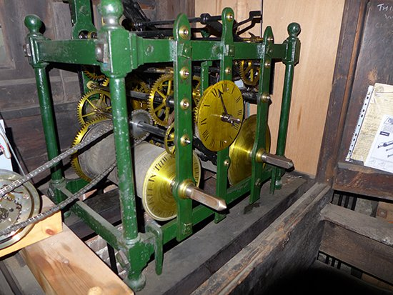

From: borck.breuberg@t-online.de Subject: Glocken- und Turmuhrennachrichten Juli 2022 Date: Thu, 30 Jun 2022 00:53:12 +0200attached files
Liebe Glocken- und Turmuhrenfreunde
Liebe Freunde der öffentlichen Zeitanzeigen
Wusch… schon wieder ist ein Monat um – je älter man wird, desto schneller scheint die Zeit zu vergehen; geht es euch auch so?
>Zunächst nochmal die Erinnerung, dass vom 2ten bis zum 9ten Juli in Apolda eine Festwoche zum 300 Jährigen „Glockenguss in Apolda“ begangen wird. Die Veranstaltung wird „Weltglockengeläut“ genannt. Schon vor 10 Jahren fand eine Glocken-Festwoche statt, über die die „Thüringer Allgemeine“ berichtete. Für dieses Jahr steht das Rahmenprogramm für die Museumsleiterin Rena Erfurth auch schon fest. Auf der WEBseite des Museums ist nicht so viel zu sehen (es sei denn, man schaut in die Familiengeschichte der Schilling), aber beim 360 Grad Rundgang sehr wohl; gleich am Eingang die große Drehpendeluhr! Bei diesem Rundgang kann man am Gestell des Glockenspiels einem kurzem Vortrag der Leiterin zuhören; Peter Schilling experimentierte bei diesem Guss mit einer Kupfer-Mangan Legierung einer Schiffsschrauben Gießerei in Waren /Müritz und dieses Glockenspiel sollte 1989 eigentlich als 40 stimmiges zum 700 jährigen Jubiläum der Stadt in Betrieb genommen werden. Leider wurde es getrennt: 18 Glocken befinden sich am Stadthaus und spielen um 10, 12 und 17 Uhr, 7 Glocken befinden sich in der Luther Kirche, der Rest im Museum.
>Sie haben Wort gehalten (Die Restauratoren des Elizabeth Tower / Generalunternehmer Mac Alpine): zur 70 Jahr Feier der Thronbesteigung von Elizabeth II ist das Gerüst vom Turm weg – ALLES restauriert – und die „Great Clock“ wird nach und nach mit den Zifferblättern verbunden… das Parlament berichtet hier und im B1M (Architektur und Konstruktions-) Kanal von Frank Mills überschlagen sich die positiven Resonanzen über seinen Film „Inside Big Ben’s makeover“.
>Herr Samel aus Heinsberg schreibt mir: Vor vielleicht 10-15 Jahren waren wir einmal im Bergischen Land oder Sauerland in NRW unterwegs und machten halt an einem sehr gemütlichen Kaffee, das ländlich gelegen war, eine schöne Gartenanlage hatte und wo im Gebäude mehrere Turmuhren ausgestellt waren. Angrenzend war dann auch eine Turmuhr-Werkstatt zu sehen. Er möchte dort noch einmal hin. Wer kann sagen, wo er gewesen ist? Ich tippte auf Burg Sayn? Oder weiträumiger Bad Iburg? „Stolpere“ jedoch über die Werkstatt, das kann ich in dem Gebiet keinem Museum zuordnen.
>Nicht nur für die Astronomen im Verteiler: Als Mitglied der „Himmelsgucker“ darf ich vermelden, dass der von unserem Leiter Dr.Christ initiierte Planetenweg in Vielbrunn jetzt auch in die große Zusammenstellung der Planetenwege Europas von Udo Dreher mit aufgenommen wurde. Die Homepage von Udo Dreher ist http://planetenwege.sternfreunde.de/
>Auch nicht nur für die Astronomen ist die Dissertation von Michael Dengler über „Zeitmaschinen, Sakralautomaten, Frömmigkeitsapparate“, wobei „Zeitmaschinen“ astronomische Uhrwerke meint. In KOPS – das institutionelle Repositorium der Universität Konstanz, kann man sich das gesamte Buch runterladen 400 Seiten, die gezielt gelesen sein wollen, nichts zum „eben mal durchblättern“. Nicht nur, dass man im Text praktisch allen Autoren begegnet, die sich mit dem Thema Uhr und Astronomie widmeten, sondern es geht auch recht weit zurück bei Abhandlungen grundsätzlicher Art wie dem „logicus mechanicus“ von Conrad Dasypodius und der Maschinen Diskurs der zweiten Hälfte des 16. Jahrhunderts. Auch ein frühes Maschinenbuch zur Interpretation des „Heron Mechanicus“ ist enthalten. Unser Bibliothekar kann beim Literaturverzeichnis nachsehen, ob alle Bücher im DGC Bestand sind… Und wir können mal überlegen, ob wir alle erwähnten Uhren gesehen haben oder wenigstens drüber gelesen haben. Bei der Behandlung der Schwilgue Uhr in Straßburg hatte ich durch Erwähnung der Habrechts jedenfalls ein AHA Erlebnis, dem Buch von Silvio geschuldet. Für mich auch interessant die nachgewiesenen Reisen der jeweiligen Uhrmacher an andere Orte mit astronomischen Uhren zum Lernen, Ideen sammeln und sicher auch zum Nachahmen.
>Hier nun die in den Juni Nachrichten avisierten Details: Michael Neureiter warnt uns mit seinem Bericht „Betrugsfall“ (anbei) vor unlauteren Verkäufern im Internet. Wie soll man sowas aber auch erkennen, wenn sogar Dokumente gesendet werden? Ich hoffe doch, dass man durch den Mailtransfer demjenigen auf die Schliche kommt. Gut, dass Michael durch Intervention beim Anbieter-Dienst die Angebots Streichung erwirken konnte. Wenigstens auf DER Plattform konnte der Betrüger die Uhr nicht mehr verscherbeln.
Michael hat im Juni wieder ein Teilstück des bekannten Weges nach Santiago de Compostela bewältigt und ist von seiner Pilgereise zurück; wie nicht anders zu erwarten, hat er nach Turmuhren Ausschau gehalten und fand eine Uhr, die wohl aus Frankreich von Odebey stammt. Wer auf seinen Facebook Account geht, findet am 6.Juni (8ter Tag) das Bild der Uhr. Wer genau weiß, welche Uhr das ist, bitte bei Michael melden. Am zweiten Tag schon konnte er in Porto den Turm der „Kirche der Kleriker“ besteigen – mit 76m Höhe sehr schlank, leider ohne mechanische Turmuhr. Am letzten Tag durfte er feststellen, dass in der Kathedrale von Santiago die mechanische Turmuhr von 1831 weiterhin in Betrieb ist und täglich aufgezogen wird! Den Begriff Botafumeiro hatte ich bislang nicht gehört und erstmal nachgesehen; er wird von „Santiago Ways“ gut beschrieben. Dort erfährt man dann auch, dass das Turibulum Magnum, das große Weihrauchfass, schon im Jakobsbuch im 11ten Jahrhundert erwähnt wurde. Die WEBseite erklärt weiteres.
Michael sandte auch ein Bild von zwei Turmfalken im Dom von Klagenfurt (Falco tinnunculus, anbei 20220625); man sieht, dass ihnen von menschlicher Hand etwas geholfen wurde, sie bekamen eine großzügige Startrampe. Auf der entsprechenden Wikipedia Seite ist interessant, welche Zusammenhänge zwischen Nistgelegenheit und Beutetieren besteht >siehe dort Lebensraum und folgende Abschnitte.
>Es gibt in Glaucester (England) eine Glockenspieluhr bei der die Figuren die jeweiligen Viertelstunden im Glockenspiel durch die Mitgliedsländer des Vereinigten Königreichs (UK) repräsentiert werden; es sind (L - R) Nordirland, England, Schottland und Wales. Im Zentrum steht Old Father Time, der die Stunden schlägt.
>Es ist eine Besonderheit, wenn eine Stadtführung neben den historischen Gebäuden auch die öffentlichen Turmuhren auf den Türmen bespricht: so geschehen in Blomberg, Kreis Lippe.
>Bei Schriftverkehr mit dem Turmuhren und Glocken affinen Hofer Gästeführer Herrn Prolop, erhielt ich den Link zu Schwingungsmustern einer angeschlagenen Glocke – hochinteressant, sehen sie selbst hier. Auf gleicher WEBseite, leider noch auf altem Stand, ist das Wissenschaftsmagazin bezüglich den Gravitationswellen der Raumzeitermittlung.
>Beim saarländischen Uhrenmuseum fand ich anlässlich einer Suche zu einer Automatik Armbanduhr (Bernhard Vortmann 147-09 Z864) eine Vortmann Turmuhr in den Digitalisaten - ein aussagekräftiges Bild das uns einiges erzählt.
>Es lohnt immer mal wieder Markus Burmeister „zuzusehen“; auf seiner Webseite zeigt er Arbeiten, die dem Erhalt unserer Freunde (der Turmuhren) dienen. Bei den Referenzen ist z.B. im Artikel über die Uhr in St. Mang (unten rechts) das Getriebe zum getrennten ¼ Stunde Zifferblatt zu sehen; für die meisten von uns nie erlebt.
>Was eine Manufaktur ist? Vielleicht kommt man dem näher, wenn man sich auf der WEBseite von Bernhard Wagner in Raabs an der Thaya umsieht (Österreich). Sehr informative Texte! Er spricht in seinem YouTube Kanal z.B. auch über Qualität und in der Liste nebenan sind weitere Filme.
>Schon einige Jahre zurück (Moderator Holger Weinert noch ein junger Mann, mittlerweile in Pension) – da hat Uhrmachermeister Windeger in Frankfurt eine Weule Turmuhr restauriert; hier der HR3 Bericht.
>“interdisziplinäre Zusammenarbeit“ 1: Der Turmuhrenmann sendet Bilder eines Sonnenuhrfundes im Urlaub (Bild SU am Kirchen Portal Plütz anbei) an den SU Kreis – und erhält aus der Feder von Monika Lübker die Details aus der Sonnenuhren Datenbank der DGC zurück: DGC 5075. Typ: Wand-SU, 47 cm Ø; Azimut: S; Zeitanz.: Gebetszeiten, Kreis, 12+12 ungl. Sektoren; künstl. Ausf.: Ritzung; Werkstoff: Backstein (12 Steine); Schattenwerfer: Stab fehlt, Fußpunkt in Fuge; zeitl. Zuordnung: mittelalt.; Stil: einfach; Zustand: mittel, hist. interess.; das ist doch Klasse – Danke Monika!
>interdisziplinäre Zusammenarbeit 2: in Ansichten einer Restaurierung von Steffen Willing an der Trinitatiskirche in Carlsfeld entdeckte ich zwischen drei Zifferblättern auch drei Sonnenuhren. Sind es Sonnenuhren? Die Schattenwerfer fehlen. Also eine Anfrage beim Sonnenuhrenkreis gemacht und – bingo – sie sind als solche mit dem Hinweis erfasst, dass die Schattenwerfer fehlen. Den Grund des Verzichtes auf dieselben wird man schwerlich herausfinden. Ist es die Höhe der Anbringung und deshalb schlechter Ablesung? Ist es fortwährend schlechtes Wetter in Carlsfeld – das wollen wir nicht hoffen. Anbei jedenfalls der Auszug aus der Sonnenuhren Datenbank für alle drei Zifferblätter – sowie eine Ansicht aller Zifferblätter bei Steffen vor der Werkstatt; um einen Begriff aus der Gastronomie zu benutzen: well done!
n.b. für die Bahnfreunde im Verteiler: durch die Recherchen bzgl. Carlsfeld stieß ich auf eine Top dokumentierte Schmalspurbahn, die t.w. wieder aufgebaut wurde und wird.
>Im Digitalisat des Saarländischen Museumsverbandes ist als Beispiel eine Turmuhr aus dem Püttlingen Uhrenmuseum zu sehen. Dessen Eckdaten werden aufgeführt und der Link zur WEBseite ebenfalls: „Uhrmachers Haus“ in Püttlingen-Köllerbach ist ein Ort der Kunst und Kultur des Saarlandes und beherbergt das Saarländische Uhrenmuseum. Bei den Terminen des Museums dürfte der August mit seinen Referaten vom Abacus zu mechanischen Rechenautomaten sehr interessant werden.
>eine schöne Korfhage Installation hat Peter Faßbender geschickt; Bilder 20220521… anbei; Danke Dir!. Eine Außen-Vitrine der besonderen Art! Etwas nachgehakt kommt raus, dass es sich um das Gebäude einer Erlebnis Gastronomie handelt: Das Gasthaus „Die Glocke“ in Sankt Augustin-Hangelar; siehe Abschnitt Geschichte auf ihrer WEBseite, dort unter 1998.
>seit 1813 baut Mamias in Frankreich Uhren; der Film auf ihrer WEBseite ist gut anzusehen, auch wenn man nicht Französisch kann; lesen geht’s ja meist besser und so kann man auf jeden Fall aufnehmen, was die Firma so herstellt und macht.
>Im Rahmen meiner „Great Clock“ Verfolgung der Restaurationsarbeiten am gesamten „Elizabeth Tower“, stellt sich auch immer wieder die Frage, was vor dem Brand war, der 1834 das Parlamentsgebäude zerstörte, den Neubau erzwang und letztlich zum Bau des Uhrenturms führte. Das am „New Palace Yard“ schon eine öffentliche Uhr war, ist durch Zeichnungen / Malereien bekannt; die Lage und der Umfang der Gebäude konnte ich nun durch Einsicht in das London Blatt der Karten Sammlung von David Rumsey erkennen. Wenn der Zeichner den heutigen Stadtplan mit den verschwundenen Freiflächen sehen würde… und die vielen Brücken… z.B. die Tower Bridge fehlt noch, sie entstand erst 60 Jahre nach dem Plan… uns kommt sie als ewig dagewesen vor.
>Die turret clock Gruppe der AHS (TCG) brachte in ihren Nachrichten u.a. eine John Thwaites Turmuhr von 1814 mit einem Rahmen, den die Engländer sinnvollerweise „Birdcage“ (Vogelkäfig) nennen. Sie hat einige Umbauten hinter sich, dürfte sehr schwer sein (alles massiv Eisen), hat den Herstellernamen auf dem Seitenblech der Gangwerkswalze (bei Thwaites so üblich) und ist mit übergroßen Eisenkrampen auf dem Uhrenstuhl befestigt. Mechanische Turmuhren in England bleiben möglichst im Turm laufend erhalten und werden mit elektrischem Aufzug und Pendelregulierung nachgerüstet.
The posted frame clock by John Thwaites in St Bartholomew the Great, photo by Ian Coote :

>abgestürzte Glocken machen nachdenklich – siehe das Bild aus der WEBseite „MyHeimat“ in Lübeck.
>Das „Westfalenblatt“ berichtet: Orkan Sabine hatte Zeiger abgebrochen und Turmuhr zum Stillstand gebracht. Das den Brenkenern die Stunde wieder schlägt lässt sich hier nachlesen.
>Noch Handaufzug war vor 2 Jahren in Dingolfing angesagt. Laut Firma Rauscher vielleicht ein Einsatzort von Zehn, wo das gemacht wird; alles andere ist elektrifiziert oder auf elektrische / elektronische Uhren umgestellt. Lest selber hier.
Hinweise zu den Glockennachrichten:
>Glockennachrichten 200606: Das unerklärliche Läuten der größten Glocke Österreichs letzten Monat (es war in den Glockennachrichten) ist durch diesen Artikel geklärt: Stephansdom Wien wurde gehackt
>Glockennachrichten 200613: GLOCKENEXPERTE JULIAN ROTHHAAR AUS RODENBACH ist 13 Jahre (ich hatte schon mal berichtet) und kann dank seines absoluten Gehörs die Glockentöne bestimmen. Im Beitrag der „Badische Zeitung“ wird von einer angeblich seltenen Stahl-Glockenstuhl Sanierung berichtet – besonders das zweite Bild mit dem maroden Balken ist heftig.
>Glockennachrichten 200620: was hat der Zytturm – bzw. sein Gefängnis – mit dem Kirschenpflücken in ZUG zu tun? Hier erfahrt ihr es – und dabei auch gleich was eine Chriäsigloggä Glocke ist und wozu diese dient. In der gleichen Woche wurde eine neue Einnahmequelle für die Kirchengemeinde Kathedrale von Saint-Flour im französischen Zentralmassiv bekannt – nein, keine Mobilfunkantenne, keine Aussichtsplattform…da kommt ihr nicht drauf, muss man hier lesen. Die Kathedrale ist die höchstgelegene Bischofskirche Europas und war früher eine Prioratskirche der Abtei von Cluny
>Glockennachrichten 200627: in diesem melden die Aargauerzeitung, dass beim Bäderfest die Glocken mit Motorradreifen gedämpft werden – und das die Glocken in Nordhorn mitten in der Nacht 45 Minuten lang läuteten berichten mehrere Zeitungen und der NDR. Vom Glockenabsturz in Neumarkt lässt uns die „Mittelbayrische“ Zeitung fast gar nichts lesen.
>Dies nun für die PPU Freunde wegen des Karbonstab Pendels? Oder ist es „nur“ ein Regulator? Oder „nur“ eine normale Wanduhr? Jedenfalls hat und kann diese Kieninger das alles. Ist vielleicht das Argument original deutscher Kirchturmschlag besser? (PPU = Präzisions Pendel Uhren)
>eine schöne Turmuhren / astronomische Uhreninstallation habe ich in Stará Bystrica entdeckt; von oben nach unten eine Stundenschlag-Schale, eine Läuteglocke, ein geschnitzter Nachtwächter mit Horn, ein normales Zifferblatt, die astronomische Anzeige.
>eine Spieluhr der etwas größeren Art „The Giant Ghibli Clock“ wird von Otaku News gezeigt; diese öffentliche Uhr befindet sich in Tokio Interessant ist die Erdbebensicherung des Gebäudes , dass das Hauptquartier der „Nippon Television“ ist. Der Designer der Uhr ist in der Uhrenbeschreibung der Gebäude Erklärung erwähnt.
>am Nagoya Bahnhof steht ebenfalls eine öffentliche große Spieluhr , die aber gestalterisch einen Riesenschritt Richtung Neuzeit macht – sehr interessant. Die darstellenden Puppen weisen dem Touristen den Weg zu den Sehenswürdigkeiten der Stadt. Die Melodien beider japanischen Großuhren sind für uns „gewöhnungsbedürftig“ und die Qualität der Aufnahmen nicht so gut, aber schön ist’s schon – nicht nur für Kinder.
>so etwas gibt’s auch: ein einsamer Kirchturm – außer Funktion, ohne Kirche – am Berghang im Weinbaugelände, aber mit zwei (aktiven) großen Zifferblättern. Gefunden an der Mosel in Kobern-Gondorf. Die entsprechende WEBseite des „Kulturraum-Untermosel“ weist aus, dass er ca.1150 erbaut wurde und als Wehrturm die Befestigung der Koberner Burgen nach Südwesten ergänzt.
>immerhin wird das Bild gezeigt – ansonsten muss man sich bei den „Fränkischen Nachrichten“ mal wieder zusammenreimen, wie die fehlenden Zeiger wohl aussehen…
> Das Uhrwerk der Breisacher Münsteruhr tickt wieder, schreibt die „Badische Zeitung“ – und will für’s Weiterlesen Geld sehen. Aber auch hier: immerhin acht schöne Bilder sind beigefügt, anhand derer wir eine mehrwalzige Schneider mit ¼ und Std. Schlag und ein schönes Skelett Zifferblatt erkennen.
>ganz frisch meldet Auktionshaus Crott in Mannheim, dass ihr ChronoHype Heft Nr.9 online ist – dort findet sich Jürgen Ermert’s Artikel über Aequationsuhren, also Uhren, die die Zeitgleichung berücksichtigen. Der leider verstorbene Jobst Wenzel schrieb dazu mal: Seit Ende des 17. Jahrhunderts bis in die Mitte des 19. Jahrhunderts, musste jeder Uhrmacher und jeder interessierte Uhrenbesitzer, der eine genaue Uhr kontrollieren oder einregulieren wollte, wissen, dass es eine Wahre Sonnenzeit [auch WZ genannt] und eine Mittlere Zeit [auch MZ genannt] gibt, und wie man mit einer umgeht. Jürgen hat sich damit eingehend befasst und beschreibt am Beispiel von LePaute in Paris, dessen schon 1756 von ihm erfundene spezifische Äquationsanzeigetechnik.
>zum Schluss mal wieder eine Aussage (nicht von mir) „die größte Pendeluhr der Welt“ -hier zu sehen. Der Ton setzt etwas später ein und mir scheint, dass ein Mühlrad mittels eines Getriebes das Uhrwerk antreibt. Leider erschließt sich mir die nach 1:17 Minuten eingeblendete Infotafel nicht. Ist das Pendel 29 Meter Lang? Oder 22 und die gesamte Installation ist 29 Meter hoch – kann jemand übersetzen?
Ich schließe mit dem Wunsch bleibt gesunde / bleiben sie gesund
Mit tickenden Grüßen
Ihr / euer Christian Borck
Breuberg